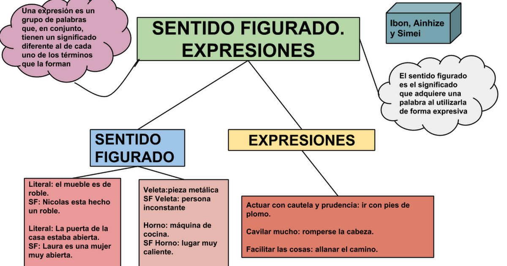

Regresar
Regresar
Aprende sobre el sentido figurado
aqui te ayudaremos :D
Aprende con tus papas es mas divertido
¿Qué es el sentido figurado?
Es cuando usas una palabra o frase para expresar algo diferente, generalmente para dar más énfasis.
El sentido figurado es lo opuesto al sentido literal, donde realmente expresas lo que dijiste.

Ejemplos:
Me muero de frío
Fig: Tienes bastante frío
Lit: Te estás muriendo de hipotermia
Estoy entre la espada y la pared
Fig: Estás en una situación complicada donde no tienes muchas opciones
Lit: Alguien te ha acorralado contra la pared usando una espada
Hace un siglo que no nos vemos
Fig: No nos vemos desde hace mucho tiempo
Lit: No nos vemos desde hace unos cien años